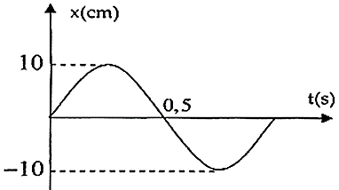
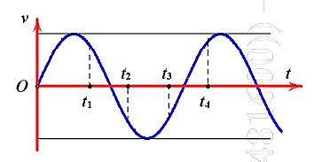
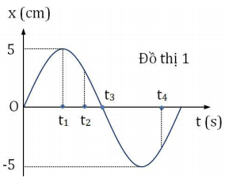
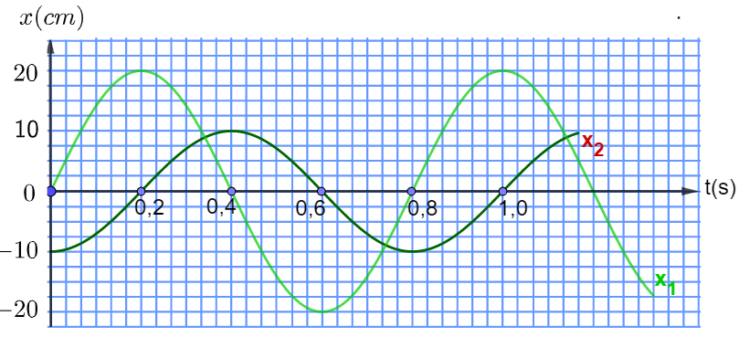
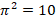

📋 Quy định làm bài
- Thời gian: 45 phút. Còn 10 phút hệ thống nhắc; hết giờ có thêm 5 phút gia hạn rồi tự động nộp.
- Bài làm ở chế độ toàn màn hình. Chuyển tab, mất focus, thoát toàn màn hình đều bị ghi nhận và báo cho giáo viên.
- Không dùng chuột phải, sao chép/dán, phím tắt. Trợ lý AI chỉ mở sau khi nộp bài. Phần tự luận: AI gợi ý điểm, giáo viên duyệt điểm chính thức.
PHẦN I. Câu trắc nghiệm nhiều phương án lựa chọn
Mỗi câu có 4 phương án, chỉ chọn một đáp án đúng (0,25 điểm).
1
Một vật dao động điều hòa với phương trình $x=A\cos\left(\omega t+\varphi\right)$. Tốc độ cực đại của chất điểm trong quá trình dao động bằng
2
Chất điểm dao động điều hòa với tần số góc $\omega$ thì gia tốc $a$ và li độ $x$ liên hệ với nhau bởi biểu thức
3
Dao động mà biên độ của vật giảm dần theo thời gian được gọi là dao động
4
Một vật dao động điều hòa trên trục Ox. Hình bên là đồ thị biểu diễn sự phụ thuộc của li độ $x$ vào thời gian $t$. Tần số và biên độ của dao động là:

5
Hai dao động điều hoà có phương trình dao động lần lượt là $x_1=4\cos 2\pi t\ (\text{cm})$, $x_2=2\cos\left(2\pi t+\frac{\pi}{3}\right)\text{ cm}$. Độ lệch pha của hai dao động bằng
6
Một vật dao động điều hòa theo phương trình $x=A\cos(\omega t+\varphi)$ ($A>0$). Biên độ dao động của vật là
7
Một chất điểm có khối lượng $m$, dao động điều hoà quanh vị trí cân bằng $O$ với tần số góc $\omega$. Lấy gốc thế năng tại $O$. Khi li độ của vật là $x$ thì vận tốc của nó là $v$. Cơ năng $W$ của vật được tính bằng biểu thức
8
Một vật dao động điều hòa theo phương trình $x=A\cos\left(\omega t+\varphi\right)$ ($A>0$). Pha dao động của vật tại thời điểm $t$ bất kì là
9
Một chất điểm dao động điều hoà, trong thời gian 1 phút vật thực hiện được 30 dao động. Chu kì dao động của vật là
10
Một chất điểm dao động điều hòa với phương trình $x=20\cos(2\pi t)\ \text{cm}$. Lấy $\pi^{2}=10$. Gia tốc của chất điểm tại li độ $x=10\ \text{cm}$ là
11
Một chất điểm dao động điều hòa trên trục Ox có phương trình $x=8\cos\left(\pi t+\frac{\pi}{4}\right)$ ($x$: cm, $t$: s) thì
12
Một hệ dao động điều hòa với tần số dao động riêng 4 Hz. Tác dụng vào hệ dao động đó một ngoại lực có biểu thức $f=F_0\cos\left(8\pi t+\frac{\pi}{3}\right)$ N thì hệ sẽ
13
Một chất điểm dao động điều hòa có đồ thị của vận tốc theo thời gian như hình vẽ. Phát biểu nào sau đây là đúng?

14
Khi nói về năng lượng của một vật dao động điều hòa, phát biểu nào sau đây là đúng?
15
Trong những trường hợp cộng hưởng sau, trường hợp nào cộng hưởng có hại?
16
Thiết bị giảm xóc trên xe máy là ứng dụng của dao động
17
Một chất điểm dao động điều hòa, nếu tăng biên độ dao động lên 2 lần thì đại lượng nào dưới đây có giá trị tăng lên 2 lần?
18
Cho một chất điểm dao động điều hòa quanh vị trí cân bằng $O$. Li độ biến thiên theo thời gian như mô tả trong đồ thị sau. Tại thời điểm $t_3$

PHẦN II. Câu trắc nghiệm đúng sai
Trong mỗi ý a), b), c), d) chọn Đúng hoặc Sai. Đúng 1 ý: 0,1 · 2 ý: 0,25 · 3 ý: 0,5 · 4 ý: 1,0 điểm.
1
Một chất điểm dao động điều hòa có quỹ đạo là một đoạn thẳng dài 20 cm. Trong 2 phút vật thực hiện 120 dao động toàn phần.
a) Biên độ dao động là 10 cm.
b) Tần số dao động là 0,5 Hz.
c) Khi vật cách vị trí cân bằng 6 cm thì tốc độ của vật bằng $16\pi$ cm/s.
d) Nếu tại thời điểm ban đầu $t=0$, vật đi qua vị trí có li độ 5 cm theo chiều hướng về vị trí cân bằng thì đến thời điểm $t=2{,}25$ s vật có vận tốc $10\pi$ cm/s.
2
Đồ thị li độ theo thời gian $x_1$, $x_2$ của hai chất điểm dao động điều hoà được mô tả như hình vẽ:

a) Biên độ của dao động $x_2$ là 10 cm.
b) Hai dao động $x_1$ và $x_2$ có cùng tần số là 1,25 Hz.
c) Độ dịch chuyển của chất điểm thứ hai từ thời điểm $t_1=0{,}2$ s đến $t_2=0{,}6$ s là 20 cm.
d) Dao động $x_1$ sớm pha hơn dao động $x_2$ là $\frac{\pi}{2}$ rad.
3
Một con lắc lò xo gồm vật nhỏ có khối lượng m = 200 gam gắn vào một lò xo có độ cứng 200 N/m. Tác dụng lên vật ngoại lực cưỡng bức F = 2cos(8 t) (F tính bằng N, t tính bằng s) dọc theo trục lò xo. Lấy
t) (F tính bằng N, t tính bằng s) dọc theo trục lò xo. Lấy
t) (F tính bằng N, t tính bằng s) dọc theo trục lò xo. Lấy 
. Ở giai đoạn ổn định:a) Vật dao động điều hoà với biên độ 2 m.
b) Vật dao động với chu kì 0,25 s.
c) Để biên độ dao động lớn nhất phải thay vật m bằng vật m' nặng 500 gam.
d) Vật thực hiện 20 dao động toàn phần mất 5 giây.
4
Một con lắc lò xo gồm vật khối lượng 200 gam đang dao động điều hoà. Hình bên là đồ thị biểu diễn sự phụ thuộc của động năng $W_đ$ của con lắc theo li độ dao động.

a) Cơ năng dao động của con lắc bằng 32 J.
b) Tốc độ cực đại của vật dao động là 56,5 cm/s.
c) Biên độ dao động là 4 cm.
d) Tại $x=2$ cm, thế năng của vật: $W_t=16$ mJ.
PHẦN III. Câu trắc nghiệm trả lời ngắn
Điền đáp số (có thể dùng dấu phẩy hoặc dấu chấm thập phân). Mỗi câu 0,25 điểm.
1
Một chất điểm dao động theo phương trình x = 5cos4πt (cm) có pha tại thời điểm t = 2 s là bao nhiêu rad. (lấy nguyên )
rad. (lấy nguyên ) π rad
2
Một vật dao động điều hoà khi qua vị trí cân bằng có tốc độ  . Tại vị trí biên độ lớn gia tốc là
. Tại vị trí biên độ lớn gia tốc là  . Biên độ dao động của vật là bao nhiêu cm?
. Biên độ dao động của vật là bao nhiêu cm?
. Tại vị trí biên độ lớn gia tốc là . Biên độ dao động của vật là bao nhiêu cm? cm
3
Một vật có khối lượng $m=200$ g dao động điều hoà với tần số góc $\omega=2\pi$ rad/s, biên độ dao động bằng 5 cm. Cơ năng của con lắc là bao nhiêu mJ? (Lấy $\pi^{2}=10$).
mJ
4
Một con lắc lò xo có chu kì dao động riêng $T_0=2$ s. Tác dụng lên vật lực cưỡng bức biến đổi tuần hoàn theo phương trùng với trục của lò xo. Lực cưỡng bức có tần số góc bao nhiêu rad/s làm con lắc dao động mạnh nhất? (làm tròn đến 2 chữ số thập phân)
rad/s
5
Đồ thị li độ theo thời gian của 2 vật dao động điều hòa được mô tả như hình vẽ. Tại thời điểm $t=0{,}2$ s thì khoảng cách giữa 2 vật bằng bao nhiêu mét.

m
6
Hai chất điểm có khối lượng lần lượt là $m_1$, $m_2$ dao động điều hòa cùng phương cùng tần số. Đồ thị biểu diễn động năng của $m_1$ và thế năng của $m_2$ theo li độ như hình vẽ. Tỉ số $\frac{m_1}{m_2}$ bằng bao nhiêu? (làm tròn đến 2 chữ số thập phân)